Dark Souls I: Os Lordes e as Sombras
Asylum Demon
Lore: O carcereiro encarregado de vigiar os mortos-vivos no Undead Asylum. Ele é o primeiro obstáculo no caminho do Escolhido.
HP: 825 | Fraqueza: Fire, Bleed
Drop: Big Pilgrim's Key, Demon's Hammer (se derrotado no 1º encontro).
, Shawn Marvin Santos.jpg)
Taurus Demon
Lore: Um demônio menor que se instalou nas muralhas de Undead Burg após a fuga dos demônios de Izalith.
HP: 1,215 | Fraqueza: Lightning, Fire, Black Pine Resin
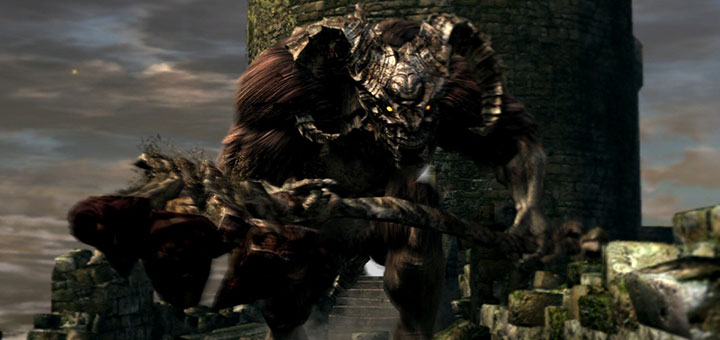
Bell Gargoyles
Lore: Criaturas de pedra enviadas para proteger o primeiro Sino do Despertar no topo da Paróquia dos Mortos-vivos.
HP: 1,000 (cada) | Fraqueza: Lightning, Fire
Dica: Corte a cauda da primeira para ganhar a Gargoyle Tail Axe.
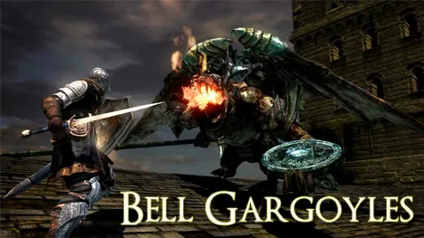
Capra Demon
Lore: Um demônio brutal que reside nos níveis inferiores de Undead Burg, acompanhado de seus cães de caça.
HP: 1,176 | Fraqueza: Fire, Poise alto
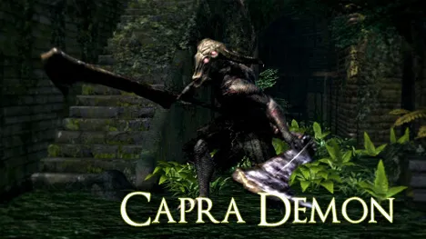
Gaping Dragon
Lore: Um descendente distante dos dragões imortais, cuja fome insaciável transformou seu corpo em uma bocarra gigante.
HP: 4,404 | Fraqueza: Lightning
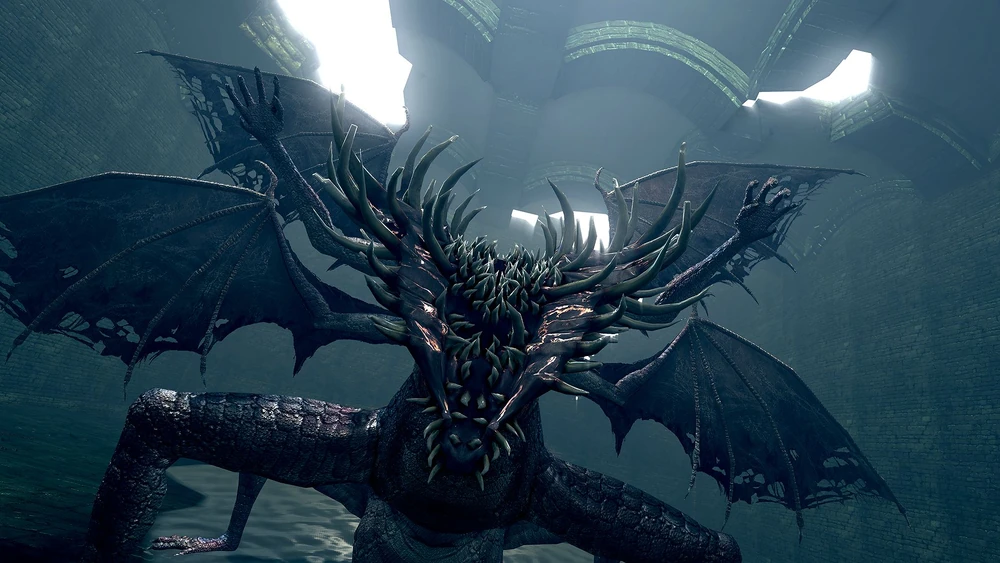
Chaos Witch Quelaag
Lore: Uma das filhas da Bruxa de Izalith, transformada em um híbrido de mulher e aranha pelo Caos.
HP: 3,139 | Fraqueza: Lightning, Magic
Imunidade: Fogo (Fire)
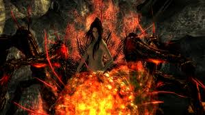
Great Grey Wolf Sif
Lore: O lobo gigante que protege o túmulo de Sir Artorias para impedir que outros caiam no Abismo.
HP: 3,432 | Fraqueza: Fire, Bleed
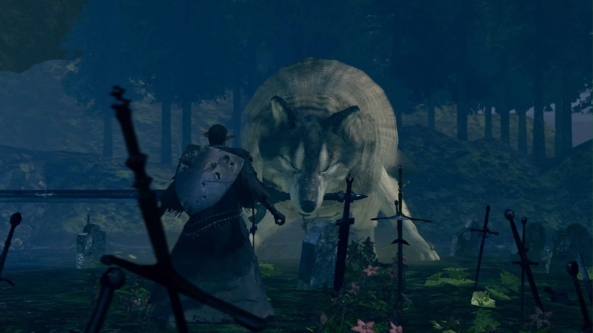
Iron Golem
Lore: O guardião mecânico da Fortaleza de Sen, movido pela alma de um dragão.
HP: 2,880 | Fraqueza: Lightning, Strike
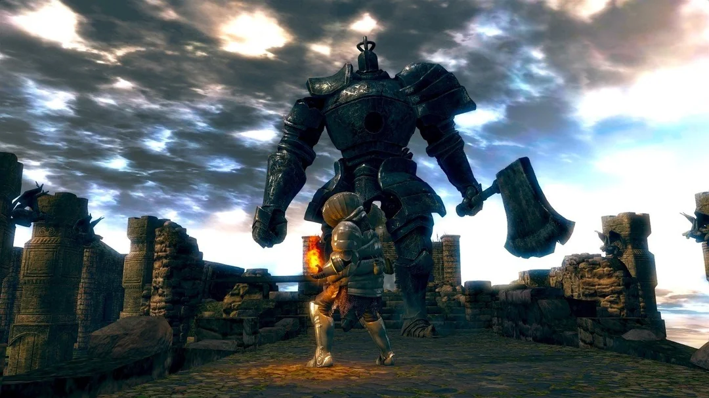
Ornstein & Smough
Lore: O capitão dos quatro cavaleiros e o carrasco real. Os protetores finais da ilusão de Gwynevere.
HP (O): 1,642 | HP (S): 2,645 | Fraqueza: Fire, Occult
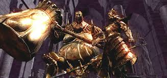
Gravelord Nito
Lore: O primeiro dos mortos. Ele administra a morte e a doença nas profundezas das Catacumbas.
HP: 4,317 | Fraqueza: Fire, Divine Weapons (para os esqueletos)
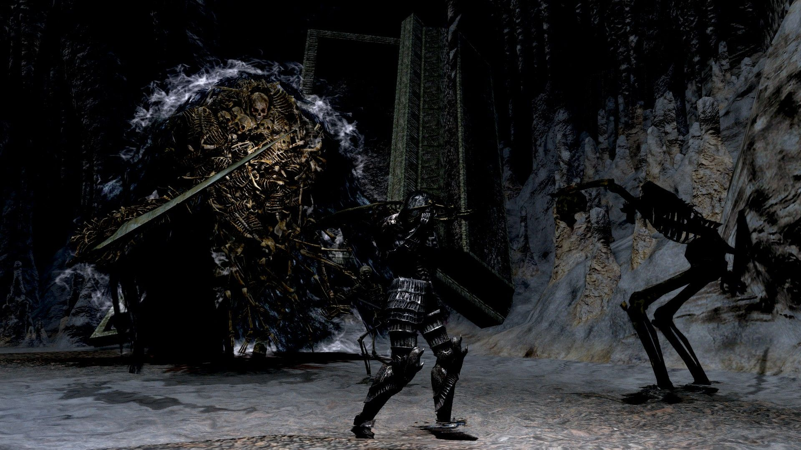
Seath the Scaleless
Lore: O dragão traidor que ajudou Gwyn. Ficou louco em sua busca pela imortalidade e pelos cristais.
HP: 5,520 | Fraqueza: Lightning, Fire
Aviso: Destrua o cristal atrás dele primeiro.
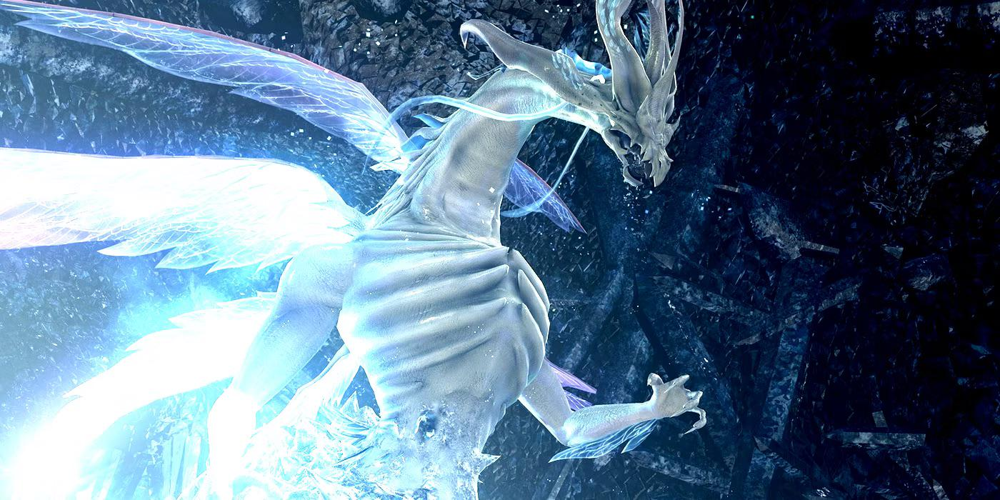
The Four Kings
Lore: Os antigos governantes de New Londo que caíram na tentação da arte de sugar vida (Lifedrain).
HP Total: 9,504 | Fraqueza: Fire, Lightning, DPS alto
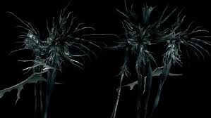
Bed of Chaos
Lore: A forma distorcida da Bruxa de Izalith após sua tentativa fracassada de recriar a Primeira Chama.
Tipo: Puzzle Boss | Estratégia: Destrua os dois núcleos laterais e salte no centro.
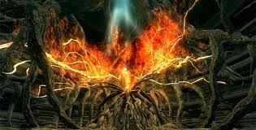
Gwyn, Lord of Cinder
Lore: O progenitor da Era do Fogo. Agora, uma casca vazia e queimada protegendo o que restou da chama.
HP: 4,250 | Fraqueza: Parry, Fire, Occult
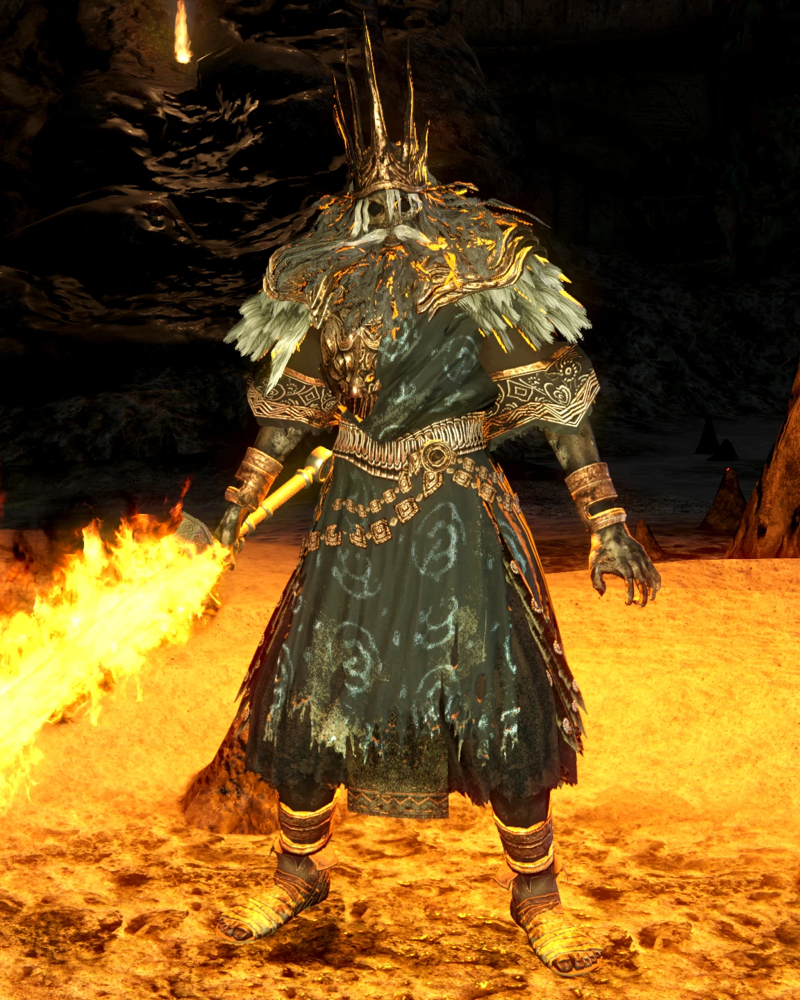
DLC: Artorias of the Abyss
Knight Artorias
Lore: O herói lendário que sucumbiu ao Abismo para salvar seu companheiro Sif.
HP: 3,750 | Fraqueza: Strike (Impacto)
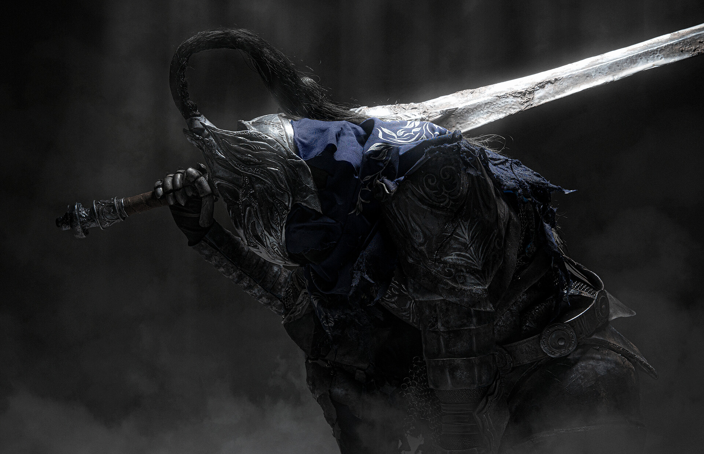
Manus, Father of the Abyss
Lore: O humano primordial cuja alma despertou e gerou o Abismo que consumiu Oolacile.
HP: 6,665 | Fraqueza: Lightning, Strike

Black Dragon Kalameet
Lore: Um dos últimos dragões antigos, temido até pelos deuses de Anor Londo.
HP: 5,400 | Fraqueza: Lightning, Strike
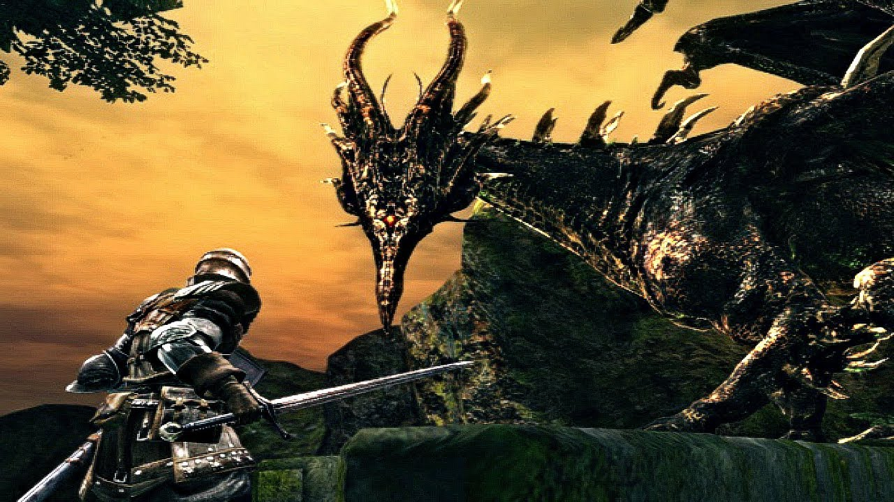
Dark Souls II: A Maldição de Drangleic
The Last Giant
Lore: O último sobrevivente da guerra contra os Gigantes, aprisionado nas profundezas da fortaleza por eras.
HP: 2,530 | Fraqueza: Dark, Fire, Lightning
Dica: Fique entre as pernas dele e cuidado com os pisões.
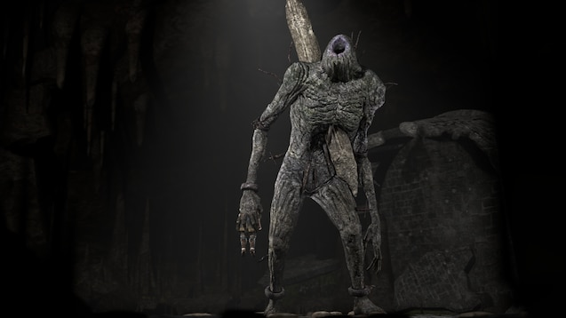
The Pursuer
Lore: Um carrasco implacável que caça aqueles marcados pela maldição. Ele viaja através de águias gigantes.
HP: 3,110 | Fraqueza: Lightning, Strike, Parry
Estratégia: Use a balista na arena para causar dano massivo.
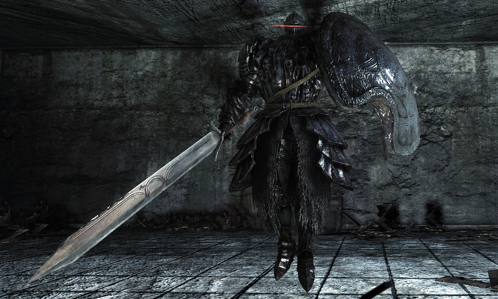
The Lost Sinner
Lore: Uma das quatro "Grandes Almas". Ela se puniu com o aprisionamento eterno por tentar reacender a Primeira Chama.
HP: 3,920 | Fraqueza: Magic, Lightning
Dica: Acenda as tochas fora da arena para travar a mira nela.
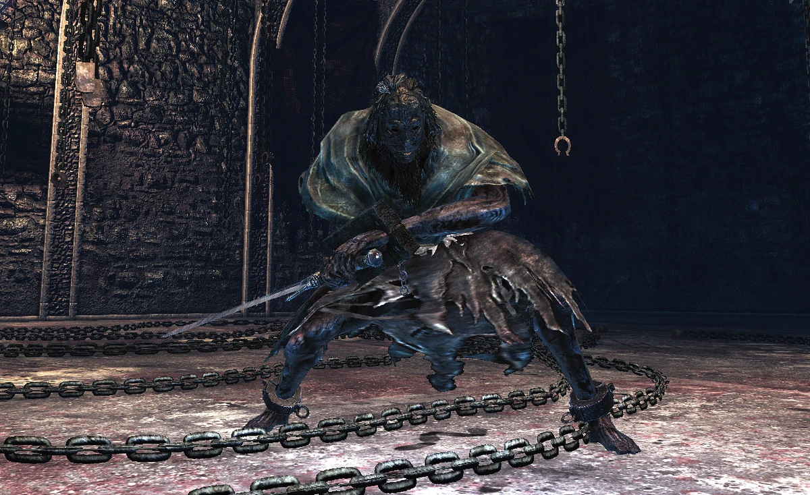
Executioner's Chariot
Lore: Um carrasco eterno que castiga os mortos-vivos no Purgatório. O cavalo é a verdadeira besta aqui.
HP: 4,140 | Fraqueza: Lightning, Fire, Holy
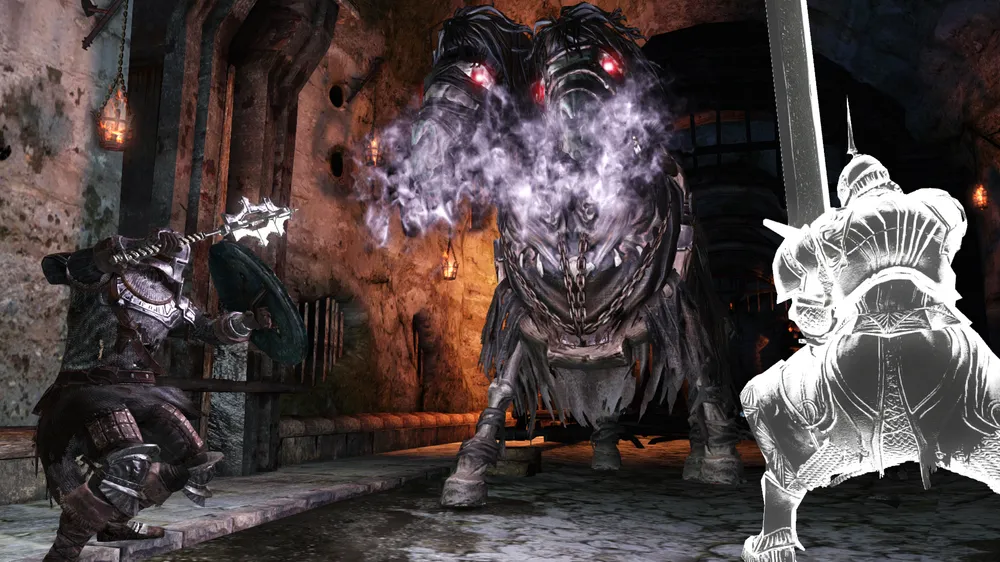
Old Iron King
Lore: Um rei cujo corpo foi consumido pelo ferro e pelo fogo, afundando em seu próprio castelo de lava.
HP: 6,070 | Fraqueza: Lightning, Magic
Imunidade: Fogo (Fire)
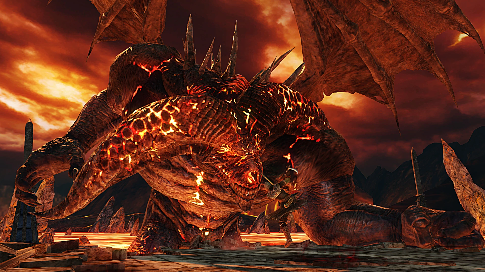
The Rotten
Lore: Uma massa de corpos costurados que reside na sarjeta, tentando dar forma e conforto aos rejeitados.
HP: 7,080 | Fraqueza: Lightning, Thrust
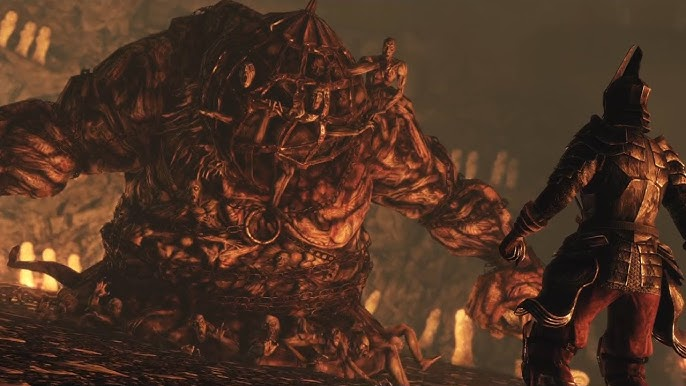
Looking Glass Knight
Lore: O cavaleiro do espelho que testa os bravos que buscam o Rei. Ele pode invocar guerreiros de seu escudo.
HP: 6,520 | Fraqueza: Strike, Magic
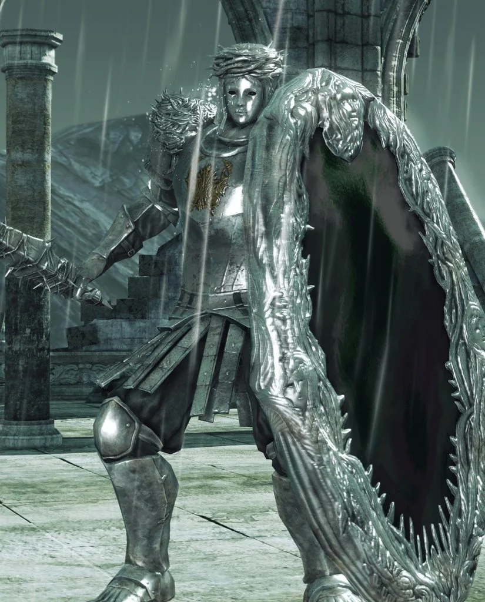
Velstadt, the Royal Aegis
Lore: O guarda mais fiel do Rei Vendrick, que permaneceu ao seu lado na Cripta mesmo após a corrupção.
HP: 6,290 | Fraqueza: Lightning, Strike
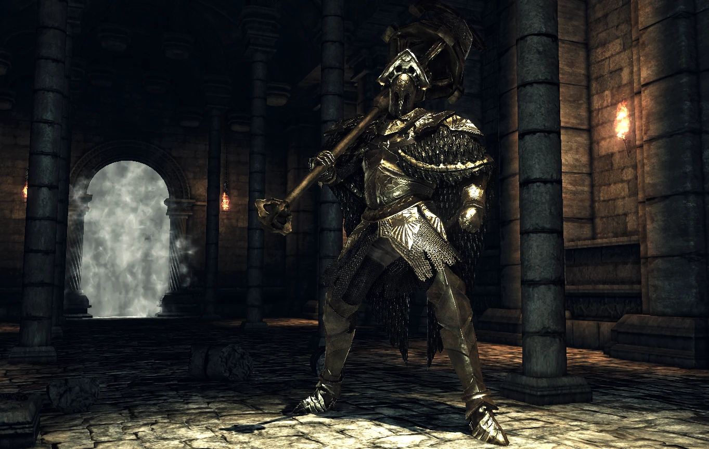
King Vendrick (Opcional)
Lore: O outrora grande Rei de Drangleic, agora um Hollow errante em sua própria tumba.
Estratégia: Você precisa das "Almas de Gigante" no inventário para causar dano real nele.
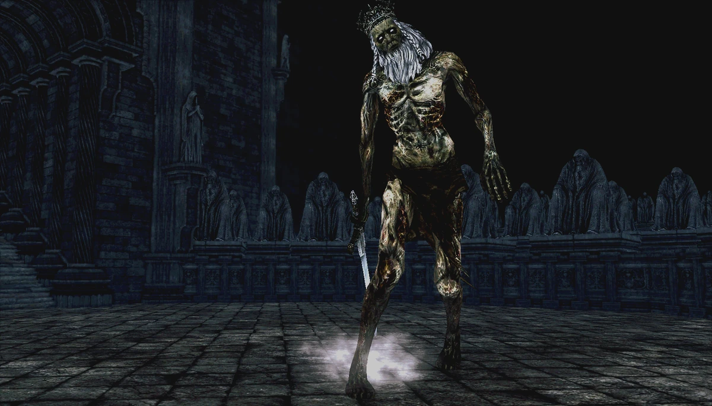
Nashandra
Lore: A Rainha de Drangleic e um fragmento de Manus. Ela busca a chama para mergulhar o mundo na escuridão.
HP: 8,310 | Fraqueza: Lightning, Fire, Strike
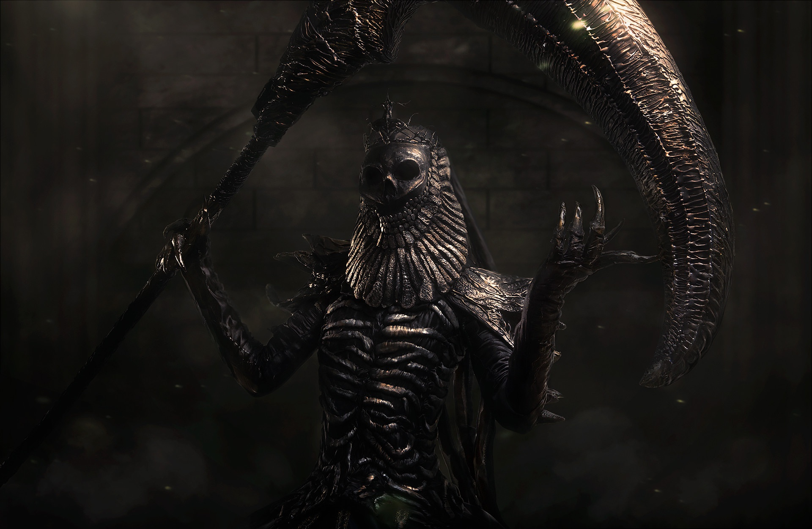
DLC: As Coroas Perdidas (Trilogy)
Sinh, the Slumbering Dragon
Lore: O dragão que dormia sob a Cidade Santuário, cujo despertar espalhou veneno por todo o reino.
HP: 10,040 | Fraqueza: Gold Pine Resin (Lightning)
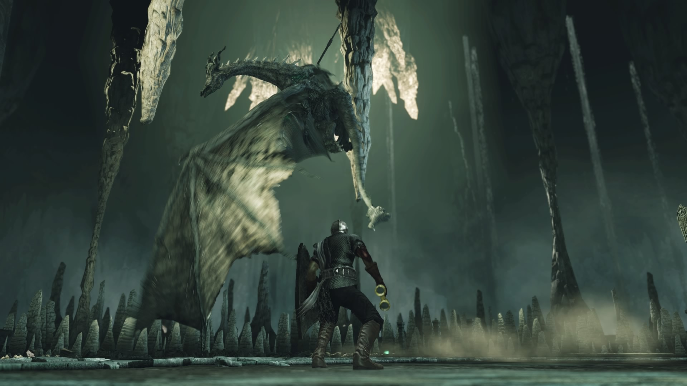
Fume Knight (Raime)
Lore: Considerado o chefe mais difícil de DS2. Um traidor de Drangleic que encontrou um novo propósito nas cinzas.
HP: 10,100 | Fraqueza: Strike (Impacto)
Dica: Use a "Simpleton's Ring" para ajudar na esquiva.
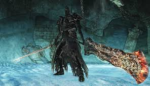
Sir Alonne
Lore: O mentor do Rei de Ferro. Seu duelo é uma questão de honra e velocidade absoluta.
HP: 10,130 | Fraqueza: Lightning, Thrust
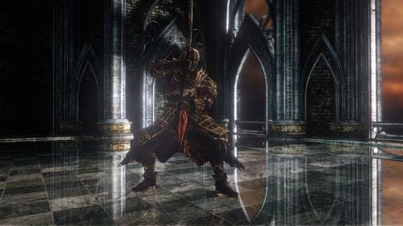
Burnt Ivory King
Lore: O rei que construiu seu trono sobre o Caos Antigo para contê-lo, sacrificando sua própria alma.
HP: 7,720 | Fraqueza: Lightning, Fire
Aviso: Resgate os cavaleiros de Loyce antes da luta para fechar os portais.
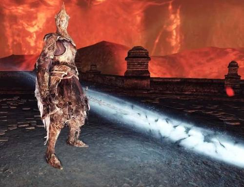
Dark Souls III: O Crepúsculo das Cinzas
Iudex Gundyr
Lore: O juiz designado para testar os Inacesos (Unkindled). Ele carrega a "Espada Espiral" em seu peito, aguardando aquele que o derrotará.
HP: 1,037 | Fraqueza: Fire (Fogo), Parry
Dica: Na segunda fase, ele se transforma em um "Pus of Man". Seja agressivo com fogo.
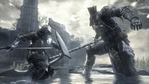
Abyss Watchers (Lorde das Cinzas)
Lore: A Legião de Mortos-Vivos de Farron. Eles juraram sangue para combater o Abismo, mas acabaram consumidos por ele, lutando entre si por toda a eternidade.
HP: 1,548 + 2,012 | Fraqueza: Lightning, Frost, Backstab
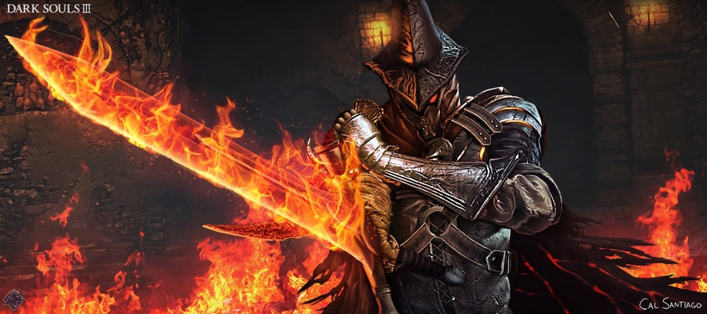
Pontiff Sulyvahn
Lore: O tirano que proclamou a si mesmo Pontífice em Irithyll. Ele é o responsável por aprisionar deuses e alimentar Aldrich.
HP: 5,108 | Fraqueza: Parry, Fire, Thrust
Aviso: Ele invoca um clone na segunda fase que prevê os movimentos dele.
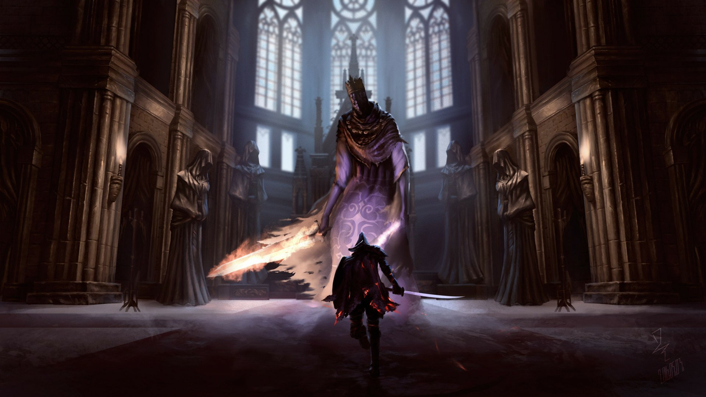
Aldrich, Devorador de Deuses (Lorde das Cinzas)
Lore: Um clérigo que desenvolveu um gosto por carne humana e acabou devorando o deus Gwyndolin para herdar seus poderes.
HP: 4,727 | Fraqueza: Fire, Lightning, Farron Greatsword
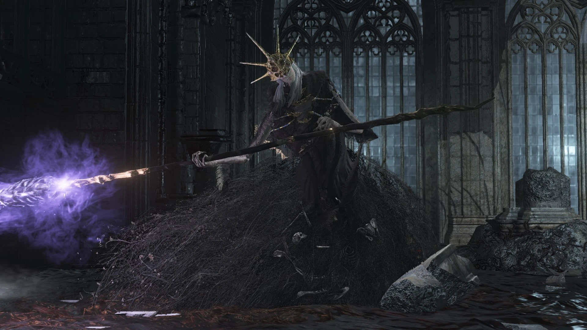
Yhorm the Giant (Lorde das Cinzas)
Lore: O descendente de um conquistador que sacrificou tudo para proteger a Capital Profanada, mesmo sabendo que o povo não o amava.
Tipo: Gimmick Boss | Estratégia: Use a espada "Storm Ruler" encontrada ao lado do trono dele.
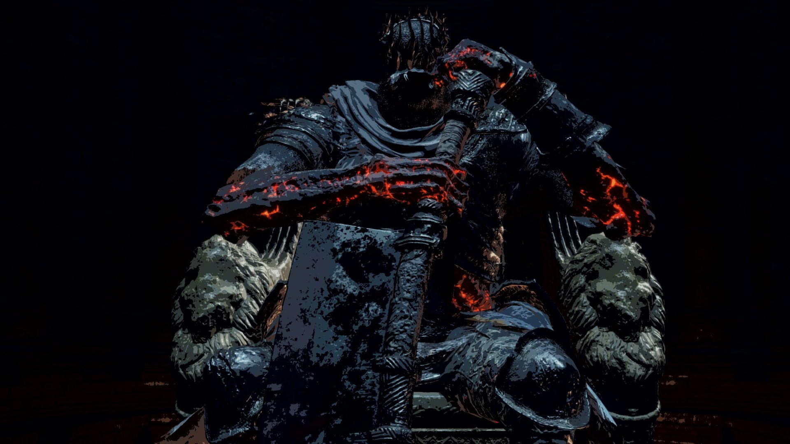
Lorian & Lothric (Lordes das Cinzas)
Lore: O príncipe Lothric recusou-se a ligar o fogo. Seu irmão mais velho, Lorian, compartilha sua maldição e protege o irmão caçula com ferocidade.
HP: 4,294 + 3,436 | Fraqueza: Lightning, Frost
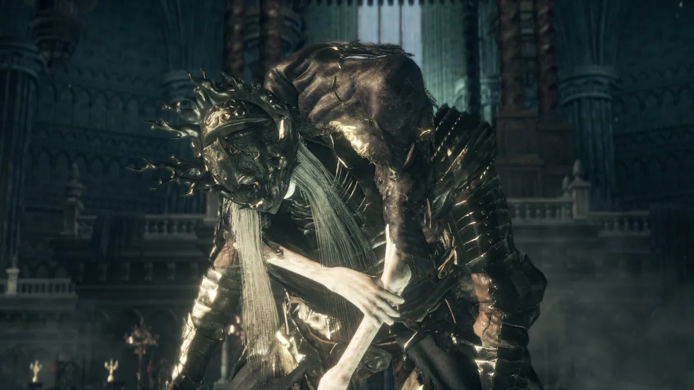
Soul of Cinder
Lore: A amálgama de todos aqueles que um dia ligaram a chama, incluindo o próprio Gwyn. É o guardião final da Primeira Chama.
HP: 6,550 + 4,209 | Fraqueza: Lightning, Dark
Nota: Na segunda fase, ele adota o conjunto de movimentos de Gwyn do DS1.
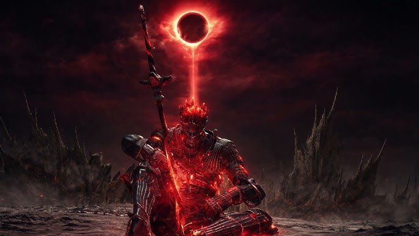
DLC: O Fim do Mundo
Slave Knight Gael
Lore: O cavaleiro escravo que atravessou eras para encontrar o Sangue da Alma Sombria. A luta final no fim de toda a existência.
HP: 15,037 | Fraqueza: Strike, Hollowslayer GS, Frost
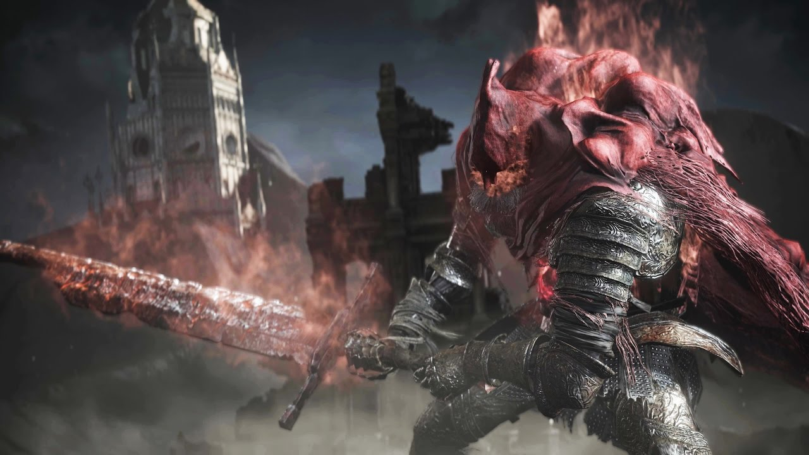
Darkeater Midir
Lore: Um dragão imortal criado pelos Deuses para lutar contra o Abismo por toda a eternidade, acabando corrompido por ele.
HP: 15,895 | Fraqueza: Lightning, Farron Greatsword (na cabeça)
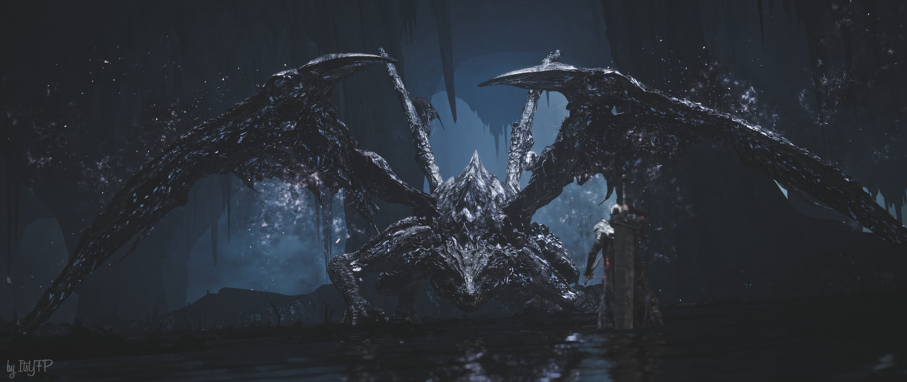